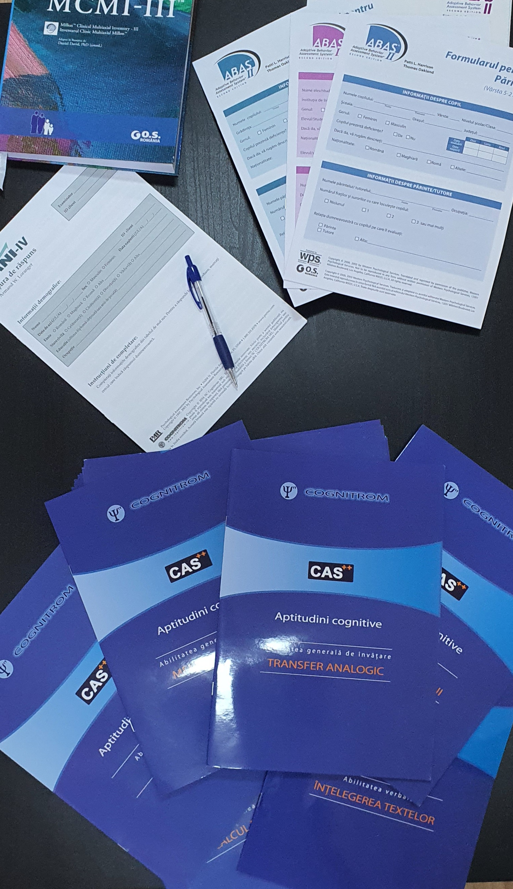
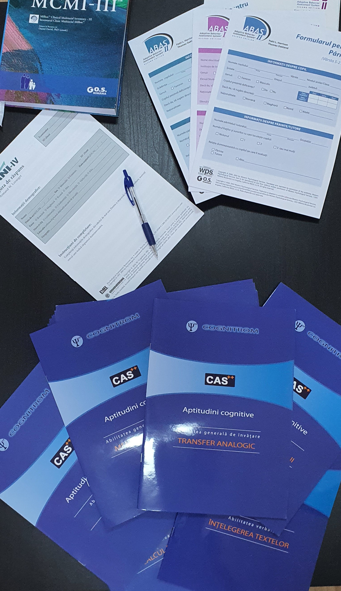

Evaluarea psihologică și psihodiagnostic
- Evaluarea psihologică se realizează prin aplicarea unor teste cu licență, metode complexe care privesc atât nivelul cognitiv, evaluarea mecanismelor și funcțiilor psihice, cu scopul identificării unor condiții patologice responsabile pentru tulburările cognitive, afective, de comportament sau dizarmonii de personalitate.
- Obiectivul psihodiagnosticului și evaluării clinice este de a identifica stările psihologice de sănătate și/sau boală și a mecanismelor psihologice , etiopatogeneza și/sau de sanogeneză cu relevanță pentru:
• evaluarea nivelului de dezvoltare psihomotrică;
• stabilirea nevoilor de ordin emoțional al persoanei;
• oferirea suportului psihologic în vederea stabilizării și asigurării confortului psihologic, indispensabil dezvoltării psihoemoționale a individului; - Instrumentele psihologice utilizate în procesul de evaluare clinică includ: observaţia clinică, interviuri (structurate, semistructurate, libere) teste psihologice cu licență, metoda biografică, analiza produselor activităţii, etc.
- În urma evaluării psihologice se va întocmi un profil psihoaptitudinal și vocațional, profil psihologic, urmat de redactarea unui raport examen psihologic și realizarea unui plan de intervenție psihologică de specialitate, consilierea psihologică individual, suportivă, în sensul dezvoltării și optimizării personale, autocunoașterii, consiliere specifică obiectivelor medicale.
- Serviciile oferite în cadrul evaluării psihologice clinice :
• evaluare psihologică clinică pentru copii, adolescenţi şi adulţi;
• evaluare psihologică clinică a tulburărilor psihice afective şi cognitive necesare evaluării şi încadrării în grad de handicap la cererea comisiilor de specialitate( comisia de expertiză a persoanelor cu handicap, comisia de expertiză a capacității de muncă);
• evaluare psihologică pentru încadrarea de handicap și orientarea școlară a copilului cu dizabilități și/sau CES;